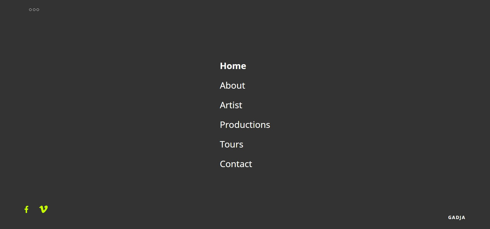
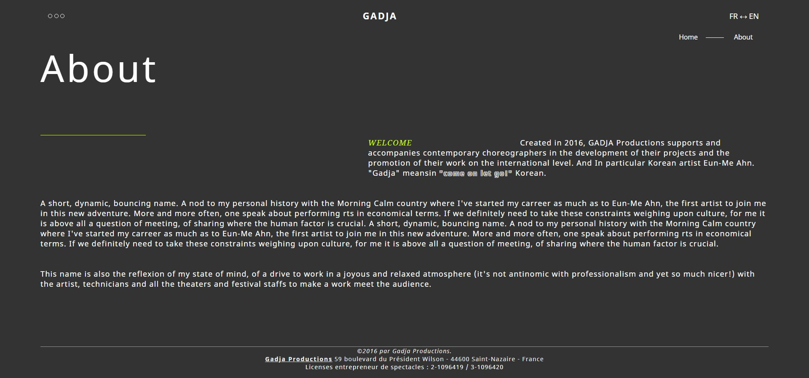

가자 프로덕션은 예술가들의 국제적인 활동을 위해 설립되었습니다. 차별화된 기획 프로젝트로 새로운 문화예술 씬(Scene)을 개척합니다. 문화예술에 대한 통합적인 사고 체계, 특정 장르에 얽매이지 않는 광범위한 스펙트럼은 중요한 차별화 요소입니다.
새로운 시도와 자유로운 실험을 통해 미래지향적인 예술 양식이 탄생할 것으로 기대합니다.
사이트 맵
home
about
artist
productions
tours
contact
반응형 웹 해상도 분기점
1920px
1024px
768px
480px
문제점
01 시멘틱 마크업
이는 검색엔진과 웹 접근성 외에도 기능 확장이 추가되었습니다.
현재 세계 70% 검색 점유율을 가진 구글 검색은 검색 로봇이 자동으로 탐색을 하는데 구조적이지 않은
마크업은 검색엔진에서 데이터 추출하기 어려워 웹 크롤링 되지 않는 문제점이 발생 할 수 있습니다.
이는 시멘틱 마크업만으로도 충분히 개선할 수 있습니다.
시멘틱 마크업 외에도 html의 rel 속성으로 검색엔진 최적화에 도움이 될 수 있습니다.
02 웹 접근성
웹 접근성이란 장애와 상관없이 모든 사람이 접근할 수 있는 것을 의미합니다.
마치 아티스트 안은미의 작품 <대심>과 <안심>이 누구나 예술을 할 수 있다는 것을 보여준 것과 같습니다.
웹 접근성을 준수하면 시각장애인들이 사용하는 보조과학기술인 스크린리더기가 올바르게 동작하고,
운동장애인들이 웹을 탐색하지 위해 사용하는 키보드 오버레이로 정확하게 사이트를 탐색할 수 있습니다.
이를 위해서는 W3C표준에 따르고 의미론적 요소 사용을 지향해야 합니다.
W3C 웹접근성 표준 외에도 스크린리더기를 위한 aria 속성을 추가하고, 시각적 안정을 위한 명도대비
접근성을 준수하며, CSS, JAVAscript 문서에서도 웹 접근성을 고려하여 코딩합니다.
Semantics markup means using code that is consistent with the meaning to code the website. It is a great advantage of information
being preferentially exposed because the search robot of Google which has 70% worldwide search engine extracts data apace and
regards them as credible information.Semantic markup for the optimisation of search engine is a recommended method
from Google in practice.
02 Web Accessibility
Web accessibility means that everyone, regardless of one’s disability, can access to the web. It is like the implication of art work by Eun-Me Ahn,
<Ahnshim Dance> and <Daeshim Dance>, that everyone can do art.
If complying with web accessibility, the screen reader which is assistive technology for vision impairment will operate properly, and people with
disabiliteis can use keyboard overlays to map the site accurately.
In order for us to make it possible, we need to follow the W3C standard and aim to use semantic element. Apart from the W3C web accessibility
stardard, we add Aria for screen readers, comply with color and contrast accessibility for visual stability, then code our website
considering the web accessibility of CSS and JAVA script documet as well.
03 Interactive Web
Dynamic website that interacts with users evokes user’s attention and keeps them stay longer. It can create sensory motion in the website interface
because it uses Bezier to produce motion directly, not designing with basic element based on program. Also, any animation motions more accurately
and faster than other extension because it is embodied with extension of svg.
사용언어
HTML 5
CSS 3
Javascript
jQuery
제작기간
제작협의 1주
디자인 2주
코딩 ?주
개발 환경
브라우저
구글 크롬
최적 해상도
1920*1080px
페이지 수
17
반응형웹
웹 접근성 심사
W3C 웹표준 통과
웹접근성 연구소 기준 통과
명도 대비율 준수
WEB AIM(Web Accessibility in Mind) 기준 준수


개선 내용
Web accessibility means that everyone, regardless of one’s disability, can access to the web. It is like the implication of art work by Eun-Me Ahn, <Ahnshim Dance> and
<Daeshim Dance>, that everyone can do art. If complying with web accessibility, the screen reader which is assistive
technology for vision impairment will operate properly, and people with disabiliteis can use keyboard overlays to map the site accurately.
In order for us to make it possible, we need to follow the W3C standard and aim to use semantic element. Apart from the W3C web accessibility stardard, we add Aria for
screen readers, comply with color and contrast accessibility for visual stability, then code our website considering the web accessibility of CSS and JAVA script documet
as well.